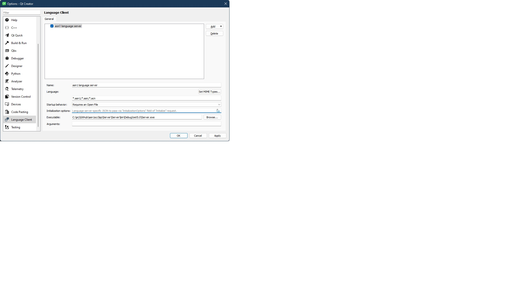
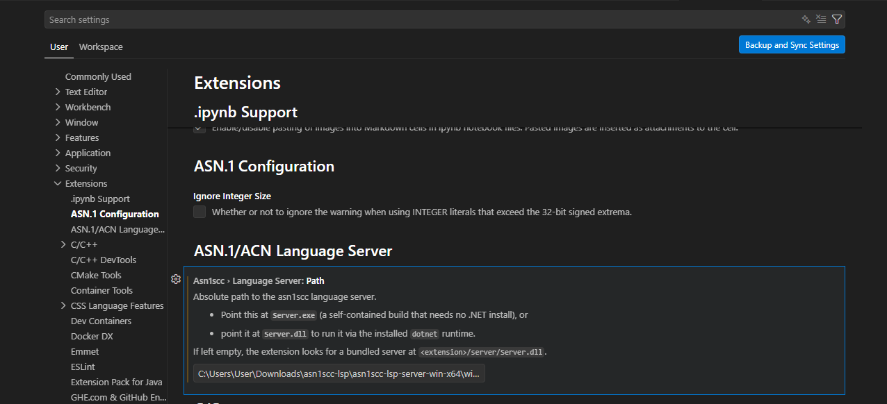

This package gives you IDE features (live error checking, auto-completion,
go-to-definition) for ASN.1 (.asn, .asn1) and ACN
(.acn) files in any editor that supports the Language Server Protocol
(LSP), such as Qt Creator and Visual Studio Code.
Nothing needs to be installed or compiled: the language server binaries are self-contained (they bundle their own runtime, so you do not need to install .NET), and the VSCode extension is already packaged (so you do not need Node.js / npm).
asn1scc-lsp-<version>.vsix | The VSCode extension. |
asn1scc-lsp-server-win-x64.zip | Language server, Windows x64. |
asn1scc-lsp-server-linux-x64.zip | Language server, Linux x64. |
README.html | This file (and the two screenshots it shows). |
Do Step 1 first, then follow the section for your editor.
Unzip the server archive for your operating system into a folder you can write to, for example:
Windows: C:\Users\<you>\asn1-lsp\
-> the server is C:\Users\<you>\asn1-lsp\Server.exe
Linux: ~/asn1-lsp/
-> the server is ~/asn1-lsp/Server
Again: you do not need to install .NET — the server is self-contained.
| Name | asn1 language server |
| MIME types | click Set MIME Types… and enter *.asn1;*.asn;*.acn |
| Startup behavior | Requires an Open File |
| Executable | the unpacked Server.exe from Step 1 |
| Arguments | (leave empty) |
.asn1 / .asn / .acn file — the server starts automatically.
Server.exe — the path shown in the screenshot is from the original
developer machine.asn1scc-lsp-<version>.vsix.settings.json directly):
{
"asn1scc.languageServer.path": "C:\\Users\\<you>\\asn1-lsp\\Server.exe"
}
On Linux, use the path to the Server file instead..asn1 / .asn / .acn file.
Server.exe
(or Server.dll to use an installed .NET runtime).Open an ASN.1/ACN file:
Server.exe (Server on Linux),
and that you opened a file with a .asn / .asn1 / .acn extension..asn and .acn files in the same folder.ChannelClosedException message when the editor closes is harmless
shutdown noise, not an error.Full guide (including building everything from source):
https://github.com/esa/asn1scc/blob/master/lsp/README.md